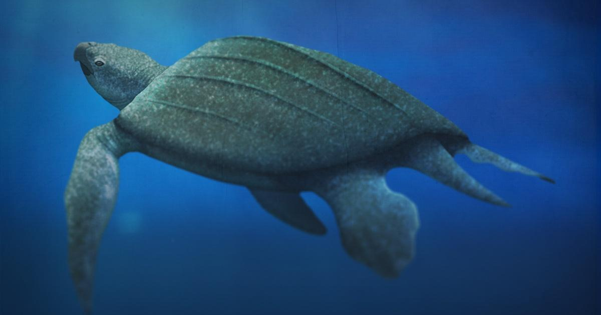

Green turtles, also known as Chelonia mydas, are one of the largest species of sea turtles, typically growing to be about 3-4 feet (90-120 cm) long and weighing between 200-500 pounds (90-225 kg). They are named for their greenish skin and fat, which is caused by their herbivorous diet consisting primarily of seagrasses and algae. Green turtles are found in tropical and subtropical waters around the world, including the Pacific, Atlantic, and Indian Oceans. They are known for their long migrations between nesting beaches and feeding areas, which can span thousands of miles. Green turtles are considered endangered due to habitat loss, hunting, and accidental capture in fishing gear. Conservation efforts include protecting nesting beaches, reducing hunting and poaching, and regulating fishing practices to reduce bycatch. Green turtles are also protected under international treaties and national laws, which prohibit the trade of their meat, shells, and eggs.
Life Span: Green turtles can live up to 80 years in the wild. Shell Anatomy: The green turtle's shell, or carapace, is made up of five central plates and four pairs of lateral plates. The plates are covered by a layer of scutes, or scales. Nesting Habits: Female green turtles come ashore to lay their eggs in sandy beaches. They dig a pit using their hind flippers and lay around 100-200 eggs. The eggs hatch after about two months, and the baby turtles make their way to the ocean. Sex Determination: The temperature of the sand during incubation determines the sex of the hatchlings. Warmer temperatures produce more females, while cooler temperatures produce more males. Conservation Success: Conservation efforts have helped green turtle populations rebound in some areas. For example, in the United States, green turtle populations in Florida have increased by over 1,000% since the 1980s. Unique Feeding Behavior: Green turtles are known for their unique feeding behavior called "benthic grazing," in which they use their sharp beaks to scrape algae and seagrass from rocks and the ocean floor. Endangered Status: While some populations have recovered, green turtles are still considered endangered due to various threats, including habitat loss, hunting, pollution, and climate change.

Olive ridley turtles, scientifically known as Lepidochelys olivacea, are a species of sea turtle that are named after their olive-colored carapace, which is heart-shaped and rounded. They are one of the smallest sea turtle species, typically growing to be 2-2.5 feet (60-75 cm) in length and weighing around 100 pounds (45 kg) on average. Olive ridley turtles are found in warm waters around the world, including the Pacific, Atlantic, and Indian Oceans. They are known for their unique nesting behavior called arribadas, in which thousands of female turtles come ashore to lay their eggs on the same beach at the same time. Olive ridley turtles are considered vulnerable due to habitat loss, hunting, and accidental capture in fishing gear. Conservation efforts include protecting nesting beaches, reducing hunting and poaching, and regulating fishing practices to reduce bycatch. Olive ridley turtles are also protected under international treaties and national laws, which prohibit the trade of their meat, shells, and eggs.
Nesting Habits: Female olive ridley turtles come ashore to lay their eggs in sandy beaches. They dig a pit using their hind flippers and lay around 100-150 eggs. The eggs hatch after about 45-50 days, and the baby turtles make their way to the ocean. Arribadas: Olive ridley turtles are known for their mass nesting events called arribadas, in which thousands of females come ashore to lay their eggs on the same beach at the same time. These events can last for several days and are one of the most spectacular natural phenomena in the world. Diet: Olive ridley turtles are omnivorous and feed on a variety of prey, including jellyfish, crustaceans, and small fish. Migration: Olive ridley turtles migrate long distances between their feeding and nesting areas. Some populations are known to migrate over 1,000 miles (1,600 km) to reach their nesting beaches. Threats: Olive ridley turtles are threatened by a variety of factors, including habitat loss due to coastal development, hunting and poaching for their meat and eggs, and accidental capture in fishing gear. Climate change is also a threat, as rising sea levels can erode nesting beaches and affect the turtles' food sources.
The leatherback sea turtle is the largest of all living turtles, reaching up to 7 feet (2.1 meters) in length and weighing up to 2,000 pounds (900 kg). It is named for its unique shell, which is not made of bone like other turtles, but instead is composed of a leathery, oil-saturated skin. This shell is typically dark in color, ranging from dark brown to black, and has a distinctive ridged appearance. Leatherback sea turtles are found in oceans around the world, and are known for their long migrations. They feed primarily on jellyfish, and are able to dive to depths of over 4,000 feet (1,200 meters) in search of their prey. They are also able to regulate their body temperature, allowing them to survive in both warm and cold waters. Despite their large size and tough appearance, leatherback sea turtles are considered an endangered species. Threats to their survival include habitat loss, pollution, and accidental capture in fishing nets. Conservation efforts are underway to protect these majestic creatures and ensure their survival for future generations.
Appearance: As I mentioned earlier, leatherback sea turtles have a unique appearance compared to other turtle species. Their shell is covered in a leathery skin that is ridged and lacks the hard, bony plates found on other turtles. This skin is covered in small, white bumps called papillae, which help the turtle grip its prey. Leatherbacks are also distinguished by their large size and distinctive carapace shape, which is widest near the front of the body and tapers towards the tail.
Range: Leatherback sea turtles are found in every ocean basin in the world, and can be found as far north as Alaska and as far south as the southern tip of South America. They are considered to be highly migratory, with some individuals traveling over 10,000 miles (16,000 kilometers) each year.
Diet: Leatherback sea turtles are primarily jellyfish predators, but they also eat other soft-bodied organisms like sea squirts, salps, and comb jellies. They have a unique adaptation in their throat called the esophageal papillae, which helps them grip slippery prey items and swallow them whole.
Reproduction: Leatherback sea turtles are known for their impressive reproductive biology. Females can lay up to 100 eggs in a single clutch, and may lay multiple clutches in a single nesting season. Unlike other sea turtles, which lay their eggs on sandy beaches, leatherbacks prefer to lay their eggs in open sand, like those found in dunes or riverbanks.
Conservation: Leatherback sea turtles face a number of threats to their survival, including entanglement in fishing gear, ingestion of plastic debris, and loss of nesting habitat due to coastal development. As a result, they are listed as an endangered species by the International Union for Conservation of Nature (IUCN) and are protected by a number of international treaties and agreements. Conservation efforts include beach monitoring, nest protection, and reducing the number of accidental captures in fishing gear.

The hawksbill turtle (Eretmochelys imbricata) is a critically endangered sea turtle that is known for its unique appearance and important ecological role. Hawksbill turtles are named for their sharp, pointed beak-like mouth, which resembles a bird of prey's beak. They have a beautiful shell that is highly valued for its intricate pattern of overlapping scales. These scales, called scutes, are made of keratin, the same material found in human hair and nails. Hawksbill turtles have a slightly flattened body, which helps them to navigate through coral reefs and other rocky underwater environments. Hawksbill turtles are found in tropical and subtropical waters around the world, including the Atlantic, Pacific, and Indian Oceans. They are primarily herbivores, feeding on sponges, algae, and other marine plants, but they will also eat small fish and crustaceans on occasion. Hawksbill turtles are important members of the marine ecosystem, playing a crucial role in maintaining healthy coral reefs. By eating sponges, they help to prevent these organisms from overgrowing and choking out the corals. Additionally, their shells provide habitat for small organisms like crabs and shrimp. Sadly, hawksbill turtles are critically endangered due to a variety of factors, including habitat loss, over-harvesting for their shells, and accidental capture in fishing nets. Conservation efforts are underway to protect these beautiful and important creatures, including habitat preservation, captive breeding programs, and restrictions on shell trade.
Life cycle: Hawksbill turtles are known for their longevity, with some individuals living to be over 50 years old. They reach sexual maturity at around 20-30 years old, and then mate every 2-3 years. Female hawksbill turtles will lay their eggs on sandy beaches, digging nests in the sand and laying around 150-200 eggs at a time. The eggs will hatch after about 2 months, and the baby turtles will make their way to the ocean. Habitat: Hawksbill turtles are found in a variety of marine habitats, including coral reefs, rocky coastlines, and open ocean. They are generally found in warm waters, with temperatures above 20°C (68°F). Conservation status: Hawksbill turtles are listed as critically endangered by the International Union for Conservation of Nature (IUCN). Their population has declined by over 80% in the last century, primarily due to human activities like over-harvesting for their shells, habitat destruction, and accidental capture in fishing nets. Conservation efforts include habitat protection, anti-poaching measures, and captive breeding programs. Shell trade: The beautiful patterned shell of the hawksbill turtle has been highly valued for centuries, and has been used to make a variety of items including jewelry, hair combs, and decorative objects. Unfortunately, this has led to a significant decline in hawksbill populations, as the turtles are often killed for their shells. The international trade in hawksbill shells is illegal, but it still persists in some areas. Threats: In addition to habitat loss and the shell trade, hawksbill turtles face a variety of other threats including pollution, climate change, and ocean plastic. They are also vulnerable to predation by animals like raccoons and seagulls when they hatch from their nests on the beach. Importance: Hawksbill turtles play an important ecological role, helping to maintain healthy coral reefs and providing habitat for other marine organisms. They are also important to many cultures around the world, and have been revered as symbols of wisdom, longevity, and beauty.

The loggerhead turtle (Caretta caretta) is a large sea turtle that is found in temperate and tropical waters around the world. It is named for its large, blocky head, which is equipped with powerful jaws that are used to crush the shells of its prey.
Here are some additional facts about the loggerhead turtle:
Appearance: Adult loggerhead turtles can grow up to three feet in length and weigh up to 400 pounds. They have a reddish-brown shell and a yellowish-brown skin. Their head is large and broad, with a powerful beak-like mouth that is used to crush the shells of its prey.
Diet: Loggerhead turtles are omnivores and eat a variety of prey, including crabs, clams, jellyfish, and sea urchins. They are also known to eat seaweed and seagrass.
Habitat: Loggerhead turtles are found in a variety of marine habitats, including the open ocean, coral reefs, and shallow coastal areas. They prefer warm water temperatures and can be found in both the Atlantic and Pacific Oceans.
Life cycle: Female loggerhead turtles will return to the same beach where they hatched to lay their eggs. They will lay around 100-120 eggs at a time, and the eggs will hatch after about two months. Baby loggerhead turtles will then make their way to the ocean, where they will spend the first few years of their life in the open ocean before moving to shallower coastal waters.
Conservation status: Loggerhead turtles are considered a vulnerable species by the International Union for Conservation of Nature (IUCN). They face a variety of threats, including habitat loss, pollution, and accidental capture in fishing nets. Efforts are underway to protect loggerhead turtle populations, including beach conservation, nest protection, and fishing gear modifications.
Importance: Loggerhead turtles are important members of the marine ecosystem, helping to maintain healthy populations of their prey and serving as prey for larger predators like sharks. They are also culturally significant in many areas and have been celebrated in art and literature for centuries.
| turtle image | Category of the turtle | Location of the turtle | Description about the turtle |
|---|---|---|---|

|
Green turtle | Bundala and Yala | Green turtles, also known as Chelonia mydas, are one of the largest species of sea turtles, typically growing to be about 3-4 feet (90-120 cm) long and weighing between 200-500 pounds (90-225 kg). They are named for their greenish skin and fat, which is caused by their herbivorous diet consisting primarily of seagrasses and algae. Green turtles are found in tropical and subtropical waters around the world, including the Pacific, Atlantic, and Indian Oceans. They are known for their long migrations between nesting beaches and feeding areas, which can span thousands of miles. Green turtles are considered endangered due to habitat loss, hunting, and accidental capture in fishing gear. Conservation efforts include protecting nesting beaches, reducing hunting and poaching, and regulating fishing practices to reduce bycatch. Green turtles are also protected under international treaties and national laws, which prohibit the trade of their meat, shells, and eggs. |
|
|
Olive Ridely turtle | Bundala | Olive ridley turtles, scientifically known as Lepidochelys olivacea, are a species of sea turtle that are named after their olive-colored carapace, which is heart-shaped and rounded. They are one of the smallest sea turtle species, typically growing to be 2-2.5 feet (60-75 cm) in length and weighing around 100 pounds (45 kg) on average. Olive ridley turtles are found in warm waters around the world, including the Pacific, Atlantic, and Indian Oceans. They are known for their unique nesting behavior called arribadas, in which thousands of female turtles come ashore to lay their eggs on the same beach at the same time. Olive ridley turtles are considered vulnerable due to habitat loss, hunting, and accidental capture in fishing gear. Conservation efforts include protecting nesting beaches, reducing hunting and poaching, and regulating fishing practices to reduce bycatch. Olive ridley turtles are also protected under international treaties and national laws, which prohibit the trade of their meat, shells, and eggs. |
| Leather back turtle | Induwara and Mawela | The leatherback sea turtle is the largest of all living turtles, reaching up to 7 feet (2.1 meters) in length and weighing up to 2,000 pounds (900 kg). It is named for its unique shell, which is not made of bone like other turtles, but instead is composed of a leathery, oil-saturated skin. This shell is typically dark in color, ranging from dark brown to black, and has a distinctive ridged appearance. Leatherback sea turtles are found in oceans around the world, and are known for their long migrations. They feed primarily on jellyfish, and are able to dive to depths of over 4,000 feet (1,200 meters) in search of their prey. They are also able to regulate their body temperature, allowing them to survive in both warm and cold waters. Despite their large size and tough appearance, leatherback sea turtles are considered an endangered species. Threats to their survival include habitat loss, pollution, and accidental capture in fishing nets. Conservation efforts are underway to protect these majestic creatures and ensure their survival for future generations. | |
|
|
Hawksbill turtle | Kosgoda | The hawksbill turtle (Eretmochelys imbricata) is a critically endangered sea turtle that is known for its unique appearance and important ecological role. Hawksbill turtles are named for their sharp, pointed beak-like mouth, which resembles a bird of prey's beak. They have a beautiful shell that is highly valued for its intricate pattern of overlapping scales. These scales, called scutes, are made of keratin, the same material found in human hair and nails. Hawksbill turtles have a slightly flattened body, which helps them to navigate through coral reefs and other rocky underwater environments. Hawksbill turtles are found in tropical and subtropical waters around the world, including the Atlantic, Pacific, and Indian Oceans. They are primarily herbivores, feeding on sponges, algae, and other marine plants, but they will also eat small fish and crustaceans on occasion. Hawksbill turtles are important members of the marine ecosystem, playing a crucial role in maintaining healthy coral reefs. By eating sponges, they help to prevent these organisms from overgrowing and choking out the corals. Additionally, their shells provide habitat for small organisms like crabs and shrimp. Sadly, hawksbill turtles are critically endangered due to a variety of factors, including habitat loss, over-harvesting for their shells, and accidental capture in fishing nets. Conservation efforts are underway to protect these beautiful and important creatures, including habitat preservation, captive breeding programs, and restrictions on shell trade. |
|
|
Loggerhead turtle | Kosgoda and Bundala | The loggerhead turtle (Caretta caretta) is a large sea turtle that is found in temperate and tropical waters around the world. It is named for its large, blocky head, which is equipped with powerful jaws that are used to crush the shells of its prey. Here are some additional facts about the loggerhead turtle: Appearance: Adult loggerhead turtles can grow up to three feet in length and weigh up to 400 pounds. They have a reddish-brown shell and a yellowish-brown skin. Their head is large and broad, with a powerful beak-like mouth that is used to crush the shells of its prey. Diet: Loggerhead turtles are omnivores and eat a variety of prey, including crabs, clams, jellyfish, and sea urchins. They are also known to eat seaweed and seagrass. Habitat: Loggerhead turtles are found in a variety of marine habitats, including the open ocean, coral reefs, and shallow coastal areas. They prefer warm water temperatures and can be found in both the Atlantic and Pacific Oceans. Life cycle: Female loggerhead turtles will return to the same beach where they hatched to lay their eggs. They will lay around 100-120 eggs at a time, and the eggs will hatch after about two months. Baby loggerhead turtles will then make their way to the ocean, where they will spend the first few years of their life in the open ocean before moving to shallower coastal waters. Conservation status: Loggerhead turtles are considered a vulnerable species by the International Union for Conservation of Nature (IUCN). They face a variety of threats, including habitat loss, pollution, and accidental capture in fishing nets. Efforts are underway to protect loggerhead turtle populations, including beach conservation, nest protection, and fishing gear modifications. Importance: Loggerhead turtles are important members of the marine ecosystem, helping to maintain healthy populations of their prey and serving as prey for larger predators like sharks. They are also culturally significant in many areas and have been celebrated in art and literature for centuries. |